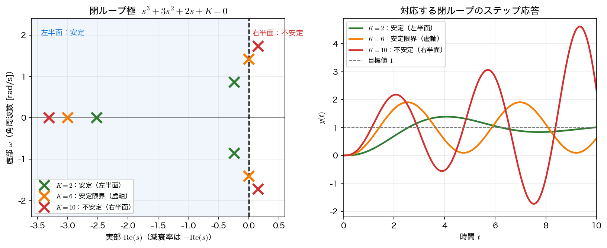

安定性とラウス・フルビッツ判別
第7回までで、伝達関数 \(H(s)\) とその極が応答を決めることを見た。本ページでは、それを 安定性の判定 に使う。極が左半面にあるかどうかを、特性方程式の根を実際に解かずに調べる ラウス・フルビッツの安定判別法 を導入する。
安定性と極の位置
システムが BIBO 安定（有界な入力に対し出力が有界）であるとは、インパルス応答 \(h(t)\) が絶対可積分、すなわち
であることをいう。これが必要十分条件である。「\(h(t)\to0\) に減衰すれば安定」と覚えたくなるが、それでは足りない。反例として \(h(t)=\dfrac{1}{1+t}\) は \(t\to\infty\) で \(0\) に収束するが、\(\int_0^\infty h\,dt=\infty\) なので、有界な入力 \(x\equiv1\) に対する出力が \(\log(1+t)\) となって発散してしまう。
とはいえ、本講義で扱う 有理な伝達関数 に限れば、絶対可積分性は極の位置だけで判定できる。伝達関数の極が
という形の項を生むことを思い出すと（第6・7回）、減衰するかどうかは極の 実部の符号 で決まる。
- すべての極の実部が 負（左半面） … 各項が \(e^{-\sigma t}\) で減衰 → 安定
- 実部が 正（右半面） の極が 1 つでもある … その項が \(e^{+\sigma t}\) で発散 → 不安定
- 実部が ちょうど \(0\)（虚軸上） の極がある … 安定限界。ただし中身は虚軸極の種類で変わる（下の note を参照）
つまり 安定性 ⇔ すべての極が左半面にある。第7回の「極の位置 → 過渡応答」が、ここで「極の位置 → 安定か否か」という判定基準になる。
虚軸上の極は一括りにできない
「虚軸上の極 ＝ 持続振動」と覚えるのは雑すぎる。極の種類で応答が違う。
- 単純な \(\pm j\omega\)（\(\omega\neq0\)） … \(\cos(\omega t+\phi)\) の 持続振動。振幅は増えも減りもしない。
- 原点の単純極 \(s=0\) … \(e^{0\cdot t}=1\)、つまり 一定値のまま（積分器がこれ）。振動ではない。
- 虚軸上の重極（\((s^2+\omega^2)^2\) など） … \(t\cos\omega t\) の形になり 振幅が増大（第6回の 逆ラプラス変換と s 平面 で見た \(1/(s^2+1)^2\) の例）。
さらに、上の 3 つは いずれも BIBO 安定ではない。単純な虚軸極でも、共振する入力（\(\pm j\omega\) の極に \(\sin\omega t\)、原点の極にステップ）を入れれば出力は発散するからである。虚軸上の極は「安定と不安定の境界」であって「安定の一種」ではない。
「減衰」と絶対可積分性
本講義で扱う 有理かつ厳密プロパーな伝達関数（分子の次数 < 分母の次数）では、〈すべての極が左半面にある〉⇔〈\(h(t)\) が指数的に減衰する〉⇔〈絶対可積分である〉の三つが一致する。したがって本ページでは「極がすべて左半面 ⇔ 減衰 ⇔ 安定」と考えてよい。
厳密プロパーでない（分子と分母が同次数の）場合は、\(h(t)\) に \(\delta(t)\) の直達項が混じるので「通常の関数として減衰する」という言い方が使えない。ただし \(\delta\) は有界入力を有界出力に写すので、BIBO 安定性の判定自体は残りの極の位置だけで決まる。
特性方程式
伝達関数 \(H(s)=\dfrac{N(s)}{D(s)}\) を 既約形（\(N\) と \(D\) の共通因子を約分した形）で書いたとき、その極は分母 \(=0\) すなわち
の根である（約分で消える根は極ではないので、先に既約形にしておく）。安定性を調べるには、この多項式の根がすべて左半面にあるかを知ればよい。
問題は、次数が上がると根を手で解けないことである。3 次・4 次でも因数分解できるとは限らず、ましてゲインのような パラメータを含む 多項式では根を陽に書けない。そこで、根を求めずに、根の実部の符号だけを係数から判定する 方法が欲しくなる。それが次のラウス・フルビッツの判別法である。
ラウス・フルビッツの安定判別法
特性多項式
に対し、係数を 2 行に互い違いに並べ、決まった規則で ラウス表 を作る。3 次 \(a_3 s^3+a_2 s^2+a_1 s+a_0\) なら、
のように、各行は直上 2 行から「たすき掛けの差を直上の先頭で割る」ことで埋めていく。こうしてできた表の 第 1 列 を見ると、
ラウス・フルビッツの判定規則
- 第 1 列の符号変化の回数 ＝ 右半面にある極の個数。
- したがって 安定 ⇔ 第 1 列がすべて同符号（通常は正） で、符号変化が \(0\) 回。
- （必要条件）安定なら すべての係数 \(a_i\) が正で同符号。係数に \(0\) や符号違いがあれば、表を作るまでもなく不安定。
根を 1 つも解かずに、係数の四則演算だけで安定／不安定が判定できるのが要点である。
割り算が破綻する 2 つの特殊ケース
上の手続きは「直上の行の先頭で割る」ので、その先頭が \(0\) だと止まってしまう。教科書的には次の 2 つの逃げ道が用意されている。
- 第 1 列の途中だけが \(0\)（その行の他の要素は \(0\) でない）… \(0\) を微小な正数 \(\varepsilon\) で置き換えて表を続け、最後に \(\varepsilon\to0^+\) の極限で符号を数える。
- 行が丸ごと \(0\)（全零行）… 直上の行から 補助多項式 を作り、それを \(s\) で微分した係数で全零行を置き換えてから続ける。全零行が出ること自体が「虚軸に関して対称な根の組（共役純虚数の対など）がある」印で、少なくとも安定ではない。
以降のコードはこの特別処理を実装していない 簡易版 である。安定範囲の内側（第 1 列に \(0\) が出ない領域）を調べるぶんには問題ないが、境界そのもの、たとえば下の例で \(K=6\) を直接入れると第 1 列が \([1,\,3,\,0,\,\text{nan}]\) になって破綻する。境界の判定は「\(K\) を記号のまま残して不等式を解く」か、np.roots で実際の根を見るのが確実である。
例：ゲインを上げると不安定化するフィードバック系
次ページで扱うフィードバック系の代表例として、
を単位フィードバックで閉じた系を考える（フィードバックの構造は次ページ）。閉ループの特性方程式は \(1+G(s)=0\)、すなわち
である。ラウス表の第 1 列は
となる。安定 ⇔ 第 1 列がすべて正 ⇔ \(\dfrac{6-K}{3}>0\) かつ \(K>0\)、すなわち
がゲイン \(K\) の 安定範囲 である。\(K=6\) で第 1 列に \(0\) が現れ、極が虚軸に乗って 持続振動、\(K>6\) で 不安定 になる。Python で確かめる。
import numpy as np
import sympy as sp
s, K = sp.symbols("s K", real=True)
def routh_first_column(coeffs):
"""特性多項式の係数 [a_n,...,a_0] からラウス表の第1列を返す。"""
n = len(coeffs) - 1
width = (n + 2) // 2
R = sp.zeros(n + 1, width)
for i in range(width):
if 2*i < len(coeffs): R[0, i] = coeffs[2*i]
if 2*i+1 < len(coeffs): R[1, i] = coeffs[2*i+1]
for r in range(2, n + 1):
a, b = R[r-2, 0], R[r-1, 0]
for c in range(width - 1):
R[r, c] = sp.simplify((b*R[r-2, c+1] - a*R[r-1, c+1]) / b)
return [R[r, 0] for r in range(n + 1)]
# G=K/(s(s+1)(s+2)), 1+G=0 -> s^3+3s^2+2s+K=0
col = routh_first_column([1, 3, 2, K])
print("ラウス表 第1列:", col)
# 各 K で実際の根を求め、ラウス判定と照合
for k in (2, 6, 10):
r = np.roots([1, 3, 2, k])
print(f"K={k}: 極={np.round(r, 3)} 最大実部={r.real.max():+.3f}")
print("K=6 の因数分解:", sp.factor(s**3 + 3*s**2 + 2*s + 6))
ラウス表 第1列: [1, 3, 2 - K/3, K]
K=2: 極=[-2.521+0.j -0.239+0.858j -0.239-0.858j] 最大実部=-0.239
K=6: 極=[-3.+0.j 0.+1.414j 0.-1.414j] 最大実部=+0.000
K=10: 極=[-3.309+0.j 0.154+1.732j 0.154-1.732j] 最大実部=+0.154
K=6 の因数分解: (s + 3)*(s**2 + 2)
第 1 列の 2 - K/3 \(=\dfrac{6-K}{3}\) が \(K<6\) で正になることが、ラウス判定の核心である。実際の根を見ると、
- \(K=2\)（\(<6\)）… 最大実部 \(-0.239<0\) で全極が左半面 → 安定
- \(K=6\) … 極が \(-3\) と \(\pm j\sqrt2\)（\(\sqrt2\approx1.414\)）。
factorでも \(s^3+3s^2+2s+6=(s+3)(s^2+2)\) となり、\(\pm j\sqrt2\) が 虚軸上 → 安定限界（角周波数 \(\sqrt2\) の持続振動） - \(K=10\)（\(>6\)）… 最大実部 \(+0.154>0\) で右半面に極 → 不安定
と、ラウス・フルビッツの判定（\(0<K<6\)）と完全に一致する。根を陽に解かずに、係数だけから安定範囲が出せている。

ラウス・フルビッツの使いどころ
ラウス・フルビッツの真価は、上の例のように特性方程式が パラメータ（ゲイン \(K\)）を含む 場合に出る。根を \(K\) の式で陽に書くのは（3 次でも）大変だが、ラウス表なら第 1 列を \(K\) の式のまま書き下せて、安定範囲 \(0<K<6\) が不等式として直接得られる。設計では「安定でいられるゲインの上限」を知ることが多く、そこにこの方法が効く。
まとめ
- BIBO 安定の定義は \(h(t)\) が絶対可積分。有理かつ厳密プロパーな伝達関数なら、これは すべての極が左半面（実部 \(<0\)）と同値になる。
- 右半面の極があれば発散。虚軸上の極は 安定限界 で、単純な \(\pm j\omega\) なら持続振動、原点なら一定値、重極なら増大と中身は違うが、いずれも BIBO 安定ではない。
- 極は 特性方程式 \(D(s)=0\) の根。次数が上がると陽に解けないので、根を求めずに符号だけ判定したい。
- ラウス・フルビッツの安定判別法：ラウス表の 第 1 列の符号変化の回数 ＝ 右半面の極の個数。安定 ⇔ 第 1 列がすべて同符号。
- 例 \(s^3+3s^2+2s+K=0\) では安定範囲が \(0<K<6\)。\(K=6\) で持続振動、\(K>6\) で不安定と、実際の根と一致する。
次は、この特性方程式を生み出す フィードバック制御 の構造そのものに進み、ゲインで極を動かして定常偏差と過渡応答を設計する。